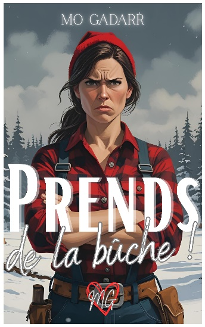

🎬 Bande-annonce officielle

L'histoire
Il existe un seul bûcheron de profession dans la ville de Treecourt, au Canada.
Détrompez-vous : il ne s'agit pas d'un barbu aux muscles surdimensionnés. C'est une femme.
Nicola n'a jamais voulu rentrer dans le moule qu'on lui prédestinait. Patronne de la scierie de son village, bûcheronne passionnée par le bois, femme de caractère, elle refuse de voir sa forêt sacrifiée pour une usine de pâtisseries françaises.
Elle compte bien barrer la route à cette franchise représentée par Zack, un pâtissier hors pair qui s'est notamment fait connaitre sur le net avec ses gâteaux trompe-l'œil et surtout avec sa bûche de Noël, plus vraie que nature et tellement délicieuse.
Mais alors que l'opposition entre les deux représentants de la bûche est complète, le hasard va s'en mêler…
Une petite sœur fan de la Reine des Neiges, un vieux chien gaga et surtout la magnifique magie de Noël.
Le rapprochement sera inévitable, musclé et... terriblement sucré !